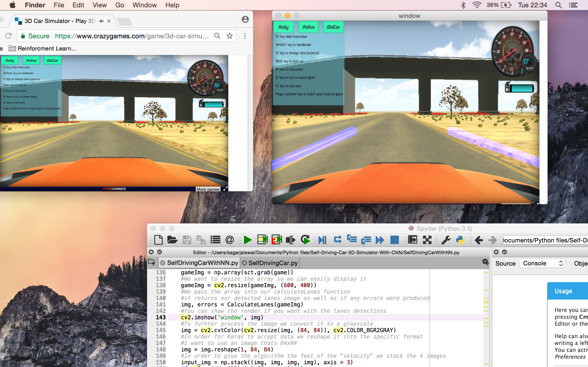
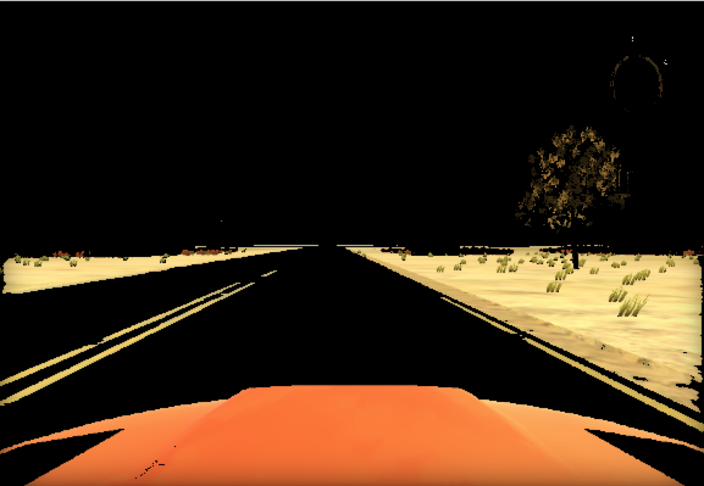
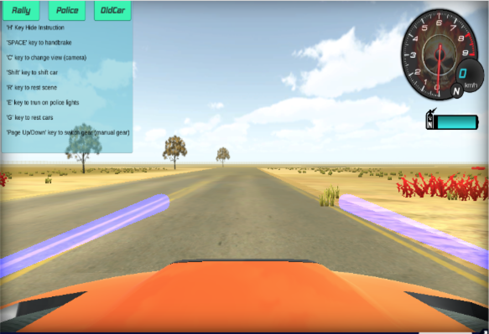

Self-Driving-Car-3D-Simulator-With-CNN


Introduction
Self Driving car after 50 epochs of training

Some point in our life as programmers we all wonder how a self driving car is actually programmed. I went through the same phase and so here it is, a very simple DIGITAL self driving car controlled using Python with a Reinforcement Q-learning algorithm as well as a Convolutional Neural Network.
You can essentially apply this to any game, the algorithm can be adapted and the reward rules can be changed to allow for different outcomes. As we go through the code I will explain step by step what each line does and once you've mastered it you can go ahead fork the code and do as you wish.
Note: You need to have sufficient knowledge about Reinforcment learning before progressing, this tutorial
only explains the code it does not go into the theoretical details
The links below help explain the theoretical details as well as other details I had problems with:
https://stats.stackexchange.com/questions/221402/understanding-the-role-of-the-discount-factor-in-reinforcement-learning
http://mnemstudio.org/path-finding-q-learning-tutorial.htm
https://yanpanlau.github.io/2016/07/10/FlappyBird-Keras.html
https://keon.io/deep-q-learning/
https://en.wikipedia.org/wiki/Q-learning
https://medium.com/emergent-future/simple-reinforcement-learning-with-tensorflow-part-0-q-learning-with-tables-and-neural-networks-d195264329d0
We will be using Keras to make the magic happen with Tensorflow backend. Assuming you are familiar with Keras and Tensorflow and have them installed we can start!
Note: Check my other gits for brief explanation on Keras and other simple algorithms such as the CNN
and RNN if you are unfamiliar with Keras/Tensorflow!
My Setup
In order to detect lanes, we need to send game frames to the algorithm for processing. I used a library called mss(MultipleScreenShot), it allows the users to take quick screenshots with almost minimal effect in FPS. Unfortunately, it takes the screen shot of the entire screen if coordinates aren't specified, therefore in order to get game frames, the game needs to be properly positioned.
The picture below depicts my environment.
Layout as displayed on my screen 
Before we start the implementation it's a good idea to have the code open on the side as the comments have details you wouldn't want to miss.
Implementation
Imports
1 import cv2
2 import mss
3 import numpy as np
4 from keras.models import Sequential
5 from keras.layers import Dense, Flatten
6 from keras.optimizers import SGD
7 from keras.layers.convolutional import Conv2D
8 import pyautogui as p
9 import random
10 import timeWe start by importing a couple libraries. In order, we import OpenCV, our Mss library, Numpy for computation, Keras for our CNN, Pyautogui to control our keyboard, Random and finally Time for delay purposes.
Detecting Lanes
1 #Function calculates the lanes
2 def CalculateLanes(OrgImage):
3 errors = False
4 #Since our game has yellow lanes, we can detect a specific color
5 #keep that color, and get rid of everything else to make it easier
6 #to detect the yellow lanes
7 #So we convert our image to the HSL color scheme
8 HSLImg = cv2.cvtColor(OrgImage, cv2.COLOR_BGR2HLS)
9 #The lower and upper arrays define boundaries of the BGR color space
10 #BGR because OpenCV represents images in Numpy in reverse order
11 #So for our yellow color we say that our pixels color that are yellow will be
12 # R>= 100, B >= 0, G>=10 (lower limit), R<=255, B<=255, G<=40
13 lower = np.uint8([ 10, 0, 100])
14 upper = np.uint8([ 40, 255, 255])
15 #inRange basically finds the color we want in the HLSImg with the lower and upper
16 #boundaries(the ranges)
17 yellow_mask = cv2.inRange(HSLImg, lower, upper)
18 #We then apply this mask to our original image, and this returns an image showing
19 #only the pixels that fall in the range of that mask
20 YellowImg = cv2.bitwise_and(OrgImage, OrgImage, mask=yellow_mask)
21 #Convert the original image to gray
22 GrayImg = cv2.cvtColor(YellowImg, cv2.COLOR_BGR2GRAY)
23 #Apply blurring
24 #The 5x5 is the gaussianblur kernel convolved with image
25 #The 0 is the sigmaX and SigmaY standard deviation usually taken as 0
26 blurredImg = cv2.GaussianBlur(GrayImg, (5, 5), 0)
27 #Detect edges in the image
28 #700 is the max val, any edges above the intensity gradient of 700 are edges
29 #200 is the lowest intensity gradient, anything below is not an edge
30 imageWithEdges = cv2.Canny(blurredImg, threshold1=200, threshold2=700)
31 #These are the points of our trapezoid/hexagon that we crop out
32 points = np.array([[0, 310],[0, 300], [220, 210], [380, 210], [600, 300], [600, 310]])
33 #Now we calculate the region of interest
35 #We first create a mask (a blank black array same size as our image)
36 mask = np.zeros_like(imageWithEdges)
37 #Then we fill the mask underneath the points(inside the polygon) we defined
38 #with color white (255)(This is the part of the image we want to process)
39 cv2.fillPoly(mask, [points], 255)
40 #this bitwise and function basically combines the two images
41 #The coloured bit where the pixels had a value 255 is kept while the
42 #top bit is removed (which is 0)
43 croppedImg = cv2.bitwise_and(blurredImg, mask)Line 2 Our parameter being our screen shot (OrgImage)
Line 3 We initialise our variable errors to False indicating that currently we have no errors produced
Line 8 The lanes in the game are yellow and so we convert our image to the HSL color space in order to enhance our lanes. They were not very clear in the RGB space, therefore HSL was used.
Line 13&14 We define our upper and lower limit of the color space. Although the boundaries are given in terms of RGB it is actually in HSL. The comments are in RGB to make it easier to understand. Those limits represent the region where the color yellow falls within. Therefore, we use those limits so we can seek out a similar color.
Line 17 Now we apply the limits to our HSL image. It seeks out the color yellow and sets the rest of the pixels of the image to 0. We have essentially created a mask. An area where relevant pixels keep their values and the ones not needed are set to 0.
Line 20 The bitwise_and function basically takes a look at the pixel values and if the pixel value in the mask and the pixel value in the image have the same value they are kept, if they are different then it is set to 0. We are left with a image with only yellow region visible.
Yellow Image

Line 22 Now we can convert our image to grayscale. We do this in order to make the edge detection more accurate. The canny edge detection function used later on essentially measures the magnitude of pixel intensity changes. Therefore if we have colors that are similar to each other there isn't a big change in pixel intensity and it might not be considered an edge. Grayscale images are also less computation heavy.
Line 26 We now apply a gaussian blur. We do this in order to get rid of rough edges. Some realistic games or even in real life there are cracks on the road that might be considered something of interest so in order to get rid of the "noisy edges" we apply a blur.
Line 30 Now we finally apply the edge detection function. We have thresholds that identify what can and cannot be considered an edge.
Line 32 We don't want all the edges detected in the image. We only want those that concern the lanes. So we create a region of interest, a specific set of coordinates.
Line 36 We create an empty black mask with the same space dimension as our image.
Line 39 Anything around the polygon defined by our ROI is filled with black while the inside is filled with the color white (255).
Line 43 Finally we take our blurred image and we apply our mask to it. So the white region of our mask is replaced with our image while the rest is black (not used).
Great now we've managed to narrow down our edges to the region that we are interested in. Thats most of the processing done. We now want to get the appropriate lines and combine them into lanes. The next half of this function does exactly that.
1 #Basically the accumulation of the most imperfect edges with the minimum
2 #length being defined by 180
3 #Thickness of the lines is 5
4 lines = cv2.HoughLinesP(croppedImg, 1, np.pi/180, 180, np.array([]), 180, 5)
5 #Now we need to find the slope, intercept and length of each of our detected lines
6 left_lines = []
7 length_left = []
8 right_lines = []
9 length_right = []
10 #We may not always detect a line that is why we do try/except statement
11 try:
12 for line in lines:
13 #Coordinates of a single line
14 for x1, y1, x2, y2 in line:
15 #We dont want a vertical line or a horizontal line
16 if x1==x2 or y1==y2:
17 continue
18 #Slope formula
19 slope = (y2-y1)/(x2-x1)
20 #Intercept
21 intercept = y1 - slope*x1
22 #Length
23 length = np.sqrt((y2-y1)**2+(x2-x1)**2)
24 #Y is reversed in images therefore a negative slope is a left line not right
25 if slope<0:
26 left_lines.append((slope, intercept))
27 length_left.append((length))
28 else:
29 right_lines.append((slope, intercept))
30 length_right.append((length))
31 #Now we have collected our similar lines into right and left lists
32 #Now we can convert them into lanes by dot product all the similar lines with lengths
33 #The longer lines are weighted more therefore affect the lanes more
34 #Then we normalise them by dividing by sum of the lengths(sort of like averaginng)
35 left_lane = np.dot(length_left, left_lines) /np.sum(length_left) if len(length_left) >0 else None
36 right_lane = np.dot(length_right, right_lines)/np.sum(length_right) if len(length_right)>0 else None
37 #Now we have the right LANE and the left LANE through averaging and dot product
38 #Now we need to convert them back into coordinates for pixel points
39 #Having an equation of a line (assume infinite) we can select arbitrary points and find
40 #the x or y value accordingly.
41 #So we select arbitrary points for y1 = croppedImg.shape[0]
42 #and for y2 = y1*0.6, We need this in order to draw our lines (converting to pixel coordinates)
43 #We all need them to be int so cv2.line can use them
44 LeftX1 = int((croppedImg.shape[0] - left_lane[1])/left_lane[0])
45 LeftX2 = int(((croppedImg.shape[0]*0.6) - left_lane[1])/left_lane[0])
46 RightX1 = int((croppedImg.shape[0] - right_lane[1])/right_lane[0])
47 RightX2 = int(((croppedImg.shape[0]*0.6) - right_lane[1])/right_lane[0])
48 left_lane = ((LeftX1, int(croppedImg.shape[0])), (LeftX2, int(croppedImg.shape[0]*0.6)))
49 right_lane = ((RightX1, int(croppedImg.shape[0])), (RightX2, int(croppedImg.shape[0]*0.6)))
50 #Now we can draw them on the image
51 #We first create an empty array like our original image
52 #Then we draw the lines on the empty image and finally combine with our original image
53 emptImg = np.zeros_like(OrgImage)
54 #[255, 0, 0,]is the color, 20 is the thickness
55 #The star allows us to input a tuple (it processes as integer points)
56 cv2.line(emptImg, *left_lane, [255, 0, 0], 20)
57 cv2.line(emptImg, *right_lane, [255, 0, 0], 20)
58 #Finally we combine the two images
59 #It calculates the weighted sum of two arrays
60 #1.0 is the weight of our original image, we don't want to amplify it
61 #0.95 is the weight of our lines, and 0.0 is the scalar added to the sum
62 #be very significant in the image, just enough so we can see it and not obstruct anything else
63 finalImg = cv2.addWeighted(OrgImage, 1.0, emptImg, 0.95, 0.0)
64 except:
65 errors = True
66 print("Nothing detected")
67 #If we dont detect anything or to avoid errors we simply return the original image
68 return OrgImage, errors
69 #If all goes well, we return the image with the detected lanes
70 return finalImg, errorsLine 6-Line 9 We initiate empty lists for our data. Left and right lines and their corresponding lengths.
Line 4 The function HoughLines is quite difficult to understand. In layman term it is simply detecting lines in our region and returning coordinates. We set a threshold of 180 the length, and the thickness being 5. To find out more about hough transformation, go to this link
Line 12-Line 30 Looping over all the detected lines we take one line at a time and we calculate the intercept and the slope. We omit horizontal and vertical lines as our lanes will never be straight in that perspective. Finally, depending on the slope we append our lines accordingly to the right and left lanes.
Line 35-Line 36 We want to combine all our lines into lanes. We compute the dot product of the lines and their respective lengths. Longer lines have a heavier effect and so the slopes and intercepts of those line will be more dominant. Finally divide by the lengths to essentially normalise the values(So it can be mapped to the image)
Line 44-Line 47 We have the lanes, but in order to draw them we need coordinates. To draw any line (assuming infinite) any arbitrary point can be used. Using the arbitrary y values I calculate the x values.
Line 48-Line49 Now we just group those points accordingly to the right and left lanes.
Line 53 We want to draw the line on top of our image. But in order to do that we need to have an overlay image. So here, we create an empty image with the same space dimensions as our original.
Line 56-Line 57 Then we draw our lines on our empty image. The color used is blue as the format is BGR and not RGB.
Line 63 Finally we combine the two images. This is done by calculating the weighted sum of the two arrays of images. In our empty image most of the pixels are set to 0 and so only the lane pixels will be effected.
Line 65-Line 68 If any errors or a lane wasn't detected then we simply just output our original image.
Line 70 If all goes well, we output our final processed image.
finalImg

Now we can go ahead and explore the next part of the code. The next part explains how to format our processed images so it could be accepted by our Keras CNN.
1 #Processes the images and returns the required data
2 def getFrames():
3 #We initialise the mss screenshot library
4 sct = mss.mss()
5 #This essentially takes a screenshot of the square from the coordinates
6 #You can adjust these to your liking,
7 game = {'top': 122, 'left': 0, 'width': 512, 'height': 286}
8 #This converts the screenshot into a numpy array
9 gameImg = np.array(sct.grab(game))
10 #We want to resize the array so we can easily display it
11 gameImg = cv2.resize(gameImg, (600, 400))
12 #We pass the array into our calculateLanes function
13 #it returns our detected lanes image as well as if any errors were produced
14 img, errors = CalculateLanes(gameImg)
15 #You can show the render if you want with the lanes detections
16 cv2.imshow('window', img)
17 #To further process the image we convert it to a grayscale
18 img = cv2.cvtColor(cv2.resize(img, (84, 84)), cv2.COLOR_BGR2GRAY)
19 #In order for Keras to accept data we reshape it into the specific format
20 #I want to use an image thats 84x84
21 img = img.reshape(1, 84, 84)
22 #In order to give the algorithm the feel of the "velocity" we stack the 4 images
23 input_img = np.stack((img, img, img, img), axis = 3)
24 #This is required for openCV as a failsafe for stopping render
25 #By pressing q, you can stop render
26 if cv2.waitKey(25) & 0xFF == ord('q'):
27 cv2.destroyAllWindows()
28 #If all goes well we return the input_img and the errors
29 return input_img, errorsLine 2 This function essentially processes our screenshots using the lane detection function and then formats the image data so we can then use it with our CNN.
Line 4 We initialise our screenshot library here.
Line 7 Game stores the dimensions of our screenshots. It represents the area of the screen we took the screenshot of.
Line 9 We convert it to a numpy array for further processing.
Line 11 I resized the image so when we display it, it can fit on the screen. Note, if you change the size of the screen you will need to edit the coordinates of the ROI mask in the lane detection function in order to account for the size increase or decrease.
Line 14 We now call the CalculateLane() function passing the resized game screenshot as a paramter. It returns either the original image back to us or it returns our image with detected lanes.
Line 16 You can choose to render your detection but it will slow down the process quite a bit.
Line 18 We can now start formatting our image for our CNN. Our first step is to resize it to a suitable size for the CNN to process as well as to convert it to grayscale.
Line 21 Since Keras needs a specific dimension we reshape our image to 1x84x84. The 1 is essentially the batch number.
Line 23 The CNN needs to make logical decisions. Therefore, without any sense of velocity the CNN cannot perform. In order to provide the CNN with some sense of velocity we stack our images. Thus, our dimension of our input is now (1, 84, 84, 4).
Line 26-Line 27 If you've ever used OpenCV and decided to display your image/video then you know to always put this at the end or the image/video will not display.
Line 29 Finally, we return our input and errors (Errors for the CalculateLanes function)
That takes care of all the image processing. We can now go ahead and start taking a look at function that controls our car in game.
#This function makes the car accelerate
def straight():
p.keyDown("up")
p.keyUp("up")
#We can turn right with this
def right():
p.keyDown("right")
p.keyUp("right")
#Turn left with this
def left():
p.keyDown("left")
p.keyUp("left")Function straight() Key Down function presses the specific key on our keyboard. KeyUp is important as KeyDown holds the key, so we need to release it. This function is responsible for accelerating our car.
Function right() Turns our car to the right.
Function left() Turns our car to the left.
We are now ready to start building our CNN model. Our model will be quite similar to the other CNN models in the past, we will try to map our image data to the actions.
1 #For now we make the car accelerate, turn right and turn left
2 moves = 3
3 #learning rate (discount rate)
4 learningRate = 0.9
5 #This is the exploration rate (epsilon)
6 #Its better at first to let the model try everything
7 epsilon = 1.0
8 #We don't want our model to stop exploring so we set a minimum epsilon
9 epsilon_min = 0.01
10 #We also dont want our model to explore all the time therefore we want it
11 #to decay
12 epsilon_decay = 0.995
13 #Number of times we want to train the algorithm (The number of games)
14 epochs = 100
15 #We want to store our data for our replay so our model can remember the past experiences
16 memory = []
17 #The max amount of stuff we want to remember
18 max_memory = 500
19
20 #Lets start defining our model
21 model = Sequential()
22 #We will be using a CNN with 32 filters, 3x3 kernel and the input shape will be
23 #84x84 with 4 grayscale images stacked on top
24 #padding will be set as same(padding with 0) and we will use the rectified activation function
25 model.add(Conv2D(32, (3, 3), input_shape=(84, 84, 4), padding='same',
26 activation='relu'))
27 #This time we will use 64 filters with a 3x3 kernel, with the same act function
28 #but the padding will change
29 model.add(Conv2D(64, (3, 3), activation='relu', padding='valid'))
30 model.add(Conv2D(64, (3, 3), activation='relu', padding='valid'))
31 #We flatten our data in order to feed it through the dense(output) layer
32 model.add(Flatten())
33 model.add(Dense(512, activation='relu'))
34 #We have 3 outputs, forward, left, right
35 model.add(Dense(3, activation='linear'))
36 #We will be using the mean squared error
37 model.compile(loss='mean_squared_error',
38 optimizer=SGD())Line 2 As shown in the code above, our car can do 3 things. Accelerate, turn right and turn left. Thus we set our moves variable to 3.
Line 4 This is our discount rate. We want our immediate reward to be worth more than our future reward therefore we discount the future reward in order make the current reward stand out. This is because our model is uncertain what the next step may be. (More on this later)
Line 7 This is the exploration rate. We want our algorithm to start off by trying different actions.
Line 9 We don't want our model to ever stop trying random actions so we set our minimum exploration rate.
Line 12 This is the rate at which our exploration factor decays.
Line 14 This is the number of games we want to play in total.
Line 16 All the games ever played go in here. We want our model to learn from its mistakes.
Line 18 We don't want to store too many games as it becomes computation heavy.
Now we can start building our actual CNN model.
Line 21 We initialise our machine learning algorithm.
Line 25 This is our first convolutional layer. We want to output 32 filters with a 3x3 kernel and our input shape will be 84x84x4. We set our activation function to rectified linear unit.
Line 29-Line 30 We add another two convolutional layers for better accuracy.
Line 32-Line 33 We flatten our data so we can put it through a hidden layer of a simple neural network.
Line 35 This is the final output layer with 3 nodes. It calculates the probability of our 3 actions.
Line 37 Configuration for our loss and optimisation function.
Finally, we've reached the last step of the tutorial, our Q-Learning algorithm. The brain and heart of the algorithm. This algorithm decides the actions to take and essentially trains our car to be a better driver.
1 #loop over the number of epochs (essentially the number of games)
2 for i in range(epochs):
3 #time.sleep(5)
4 #We set the game_over to false as the game is just starting
5 game_over = False
6 #We start of by getting initial frames and errors
7 input_img, errors = getFrames()
8 #We set the errors to false to begin with
9 errors = False
10 #We set the reward to 0
11 reward = 0
12 #While the game is not over we loop
13 while game_over==False:
14 #Np.random.rand() returns a number between 0 and 1
15 #We check if its smaller that our exploration factor
16 if np.random.rand() <= epsilon:
17 #if the random number is smaller than our exploration factor
18 #We select a random action from our 3 actions
19 action = np.random.randint(0, moves, size=1)[0]
20 else:
21 #If it's not smaller than we predict an output by inputting our
22 #4 stacked images
23 #ouput is the probability of our 3 directions
24 output = model.predict(input_img)
25 #action is the index of the highest probability and therefore
26 #indicates which turn to take
27 action = np.argmax(output[0])
28 #if our action == 0 then we go straight
29 if int(action) == 0:
30 straight()
31 #If our action == 1 then we go right
32 elif int(action) == 1:
33 right()
34 #else we go left
35 else:
36 left()Line 2 We loop over the amount of games we want to play. In this case I have set the epochs to 100.
Line 3 Originally I had left the time.sleep in the program as this allowed me to prepare for the start of the algorithm but it also slows down the learning stage therefore it is commented out.
Line 5 The AI is about to start playing the game so we originally set the game_over to false. We will need it later.
Line 7 We start by getting the initial "state" of the algorithm. We will need this to predict our corresponding action.
Line 9 Despite the error in Line 7 we set our errors to false as errors at the start do not matter, the algorithm will be performing a random action to begin with.
Line 11 Initialise our Rewards variable to 0.
Line 13 Looping for one game, while the game isn't false
Line 16-Line 19 We start off by checking if our exploration is bigger than a random number between 0 and 1. At the begining it will be and so we select a random action from our 3 actions.
Line 20-Line 27 Once our exploration rate is low enough, we can start predicting our actions. Output stores a numpy array of size 3 produced by the prediction from our input image. Action stores the index of the maximum probability.
Line 29-Line 36 Based on our predicted or random action we select one of the functions to run that controls our car.
Halfway through! From here we can now actually start studying the bulk of the Q-learning algorithm!
1 #Once we've performed our action we get the next frame
2 #We also check weather to reward the algorithm or not
3 input_next_img, errors = getFrames()
4 #If we detect lanes and therefore no errors occur we reward the algorithm
5 if errors == False:
6 reward = 1
7 #Else if there we detect no lanes and so there is an error we
8 #say its game over
9 else:
10 reward = 0
11 game_over = True
12 #Game over or not we want to keep record of the steps the algo took
13 #We first check if the total memory length is bigger than the max memory
14 if len(memory) >= max_memory:
15 #If more memory then needed we delete the first ever element we added
16 del memory[0]
17 #We append it to our memory list
18 memory.append((input_img, action, reward, input_next_img, game_over))
19 #Next we set our input_img to our latest data
20 input_img = input_next_img
21 if game_over:
22 print("Game: {}/{}, Total Reward: {}".format(i, epochs, reward))
23 #Once the game is over we want to train our algo with the data we just collected
24 #We check if our memory length is bigger than our batch size
25 if len(memory) > 32:
26 #If so then we set the batch_size to 32
27 batch_size = 32
28 else:
29 #Else we set our batch size to whatever is in the memory
30 batch_size = len(memory)
31 #We are taking a random sample of 32 so not to overfit our algo
32 batch = random.sample(memory, batch_size)
33 #We itereate over every memory we've stored in that memory batch of 32
34 for input_img, action, reward, input_next_img, game_over in batch:
35 #if in that memory our game was over then we set the target_reward equal to reward
36 target_reward = reward
37 #If our game was not over
38 if game_over == False:
39 #This essentially is the bellman equation
40 #expected long-term reward for a given action is equal to the
41 #immediate reward from the current action combined with the expected
42 #reward from the best future action taken at the following state.
43 #The model isn't certain that for that specific action it will get the best reward
44 #It's based on probability of the action, if the probability of that action is in the
45 #negatives then our future reward is going to be further decreased by our learning rate
46 #This is just the model being cautious, as to not set an impossible reward target
47 #If the reward is impossible then the algorithm might not converge
48 #Converge as in a stable condition where it can play the game without messing up
49 target_reward = reward + learningRate * \
50 np.amax(model.predict(input_next_img)[0])
51 #So from above we essentially know what is going to happen(input_next_img)
52 #assuming the game wasn't over, the algorithm did well.
53 #So we want the algorithm to perform the same, essentially we
54 #persuade the algorithm to do what it did to get that reward
55 #so we make the algorithm predict from the previous frame(input_img)
56 #but we alter its prediction according to the action that got the highest
57 #reward and...
58 desired_target = model.predict(input_img)
59 #we set that as the target_reward...
60 desired_target[0][action] = target_reward
61 #So to make the algo perform the same, we associate the input_img with the
62 #target we want and we fit it
63 model.fit(input_img, desired_target, epochs=1, verbose=0)
64 #Finally we check if our exploration factor is bigger than our minimum exploration
65 #if so we decrease it by the decay to reduce exploration, we do this every game
66 if epsilon > epsilon_min:
67 epsilon *= epsilon_decayLine 3 After the action we get our next frame, and errors if any.
Line 5-Line 6 After the action has been performed and we have the next frame with calculated lanes and it does not return any errors then we set the reward to 1.
Line 9-Line 11 If it does return errors then we say that the game is over. I have set it up like that so the algorithm can learn to drive within lanes. The error is associated with either the lanes not being detected or simply because the car was not within any lanes to detect. The latter being more probable and thus provides reason for the specific guidelines. I also set the reward to 0 as the algorithm fails to achieve its goal
Line 14-Line 16 Regardless the status of the game_over variable, we want to record the gameplay that happened. This enables the algorithm to learn from it's mistakes. So in this piece of code, we check whether the memory is full or not, if so we delete the very first item appended.
Line 18 We append to the memory array.
Line 20 We set our next set of frames to our current set of frames. Essentially progressing our variable input_img to the next undecided action frame.
Line 21-Line 22 If game was over we print out our statistics.
Line 25-Line 30 This simply put is the setup for our replay section of the Q-algorithm. We want to select random sample of batches to train our algorithm with. Our default batch size is 32, but at the begining there wouldn't be enough to sample 32 batches. Therefore, we train the algorithm with the whole memory array.
Line 34-Line 36 Iterating over our memory, we begin by setting our target reward to our reward in the first sample memory.
Line 38-Line 50 In that memory if our game wasn't over than that means our algorithm performed well. So we want to persuade our algorithm to do the same thing in the future. Therefore we set our future reward (target reward) to the current reward from the current action combined with the expected reward from the best future action taken at the following state. We multiply by our learningRate to avoid converging problems. We are essentially increasing the probability of our desired action.
Line 58 Here we ask the algorithm again what it might predict for the previous state.
Line 60 We manipulate the prediction, we take the prediction and insert our own probability of our corresponding action. Simply telling the algorithm that for a situation like this we want this action to be performed.
Line 63 We feed the manipulations and the results into our model to train it for a single epoch.
Line 66-Line 67 Finally, after everything is done, we decrease our exploration rate by multiplying our epsilon with our epsilon decay rate.
Conclusion
Well thats it for the self driving car! You can definitely make your algorithm more complex by adding different directions, making your convolutional layers deeper etc. You can even apply this to another car game, create your own guidelines and own methods of rewards! If there are any question please don't hesitate to contact me, I am happy to help. I am open to feedback and different ways in which I could improve this, maybe you have a better way of doing this. Other than any questions, if you find a mistake while reading through this please let me know! Happy coding!